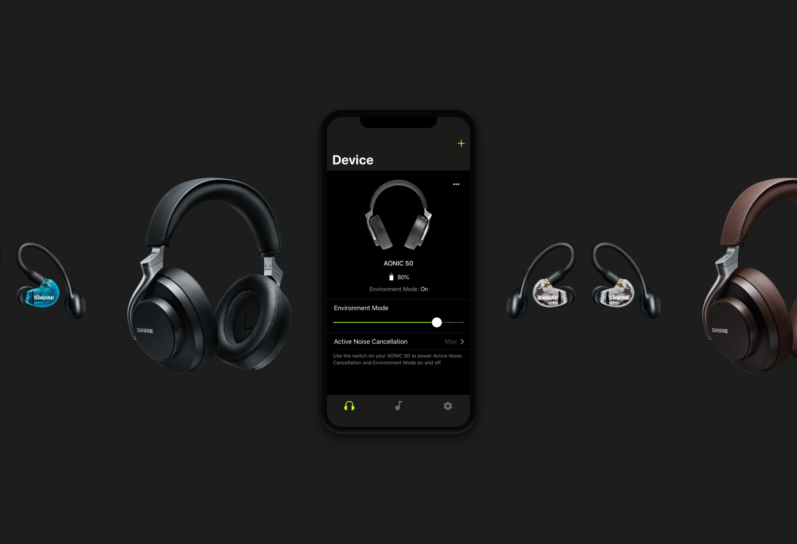
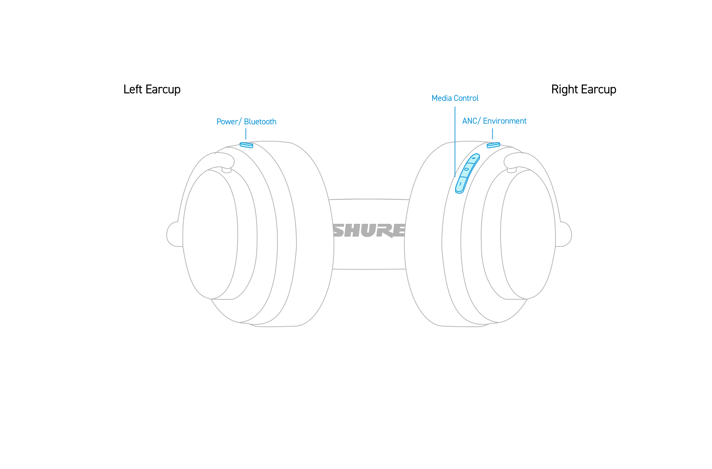
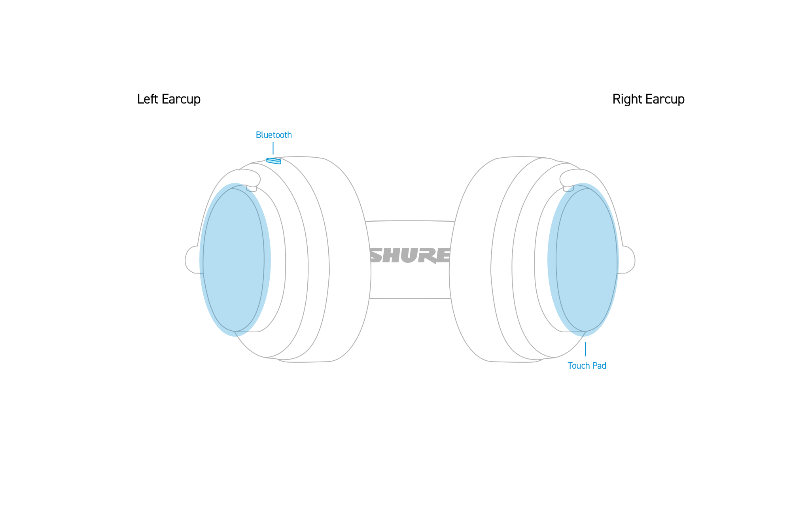
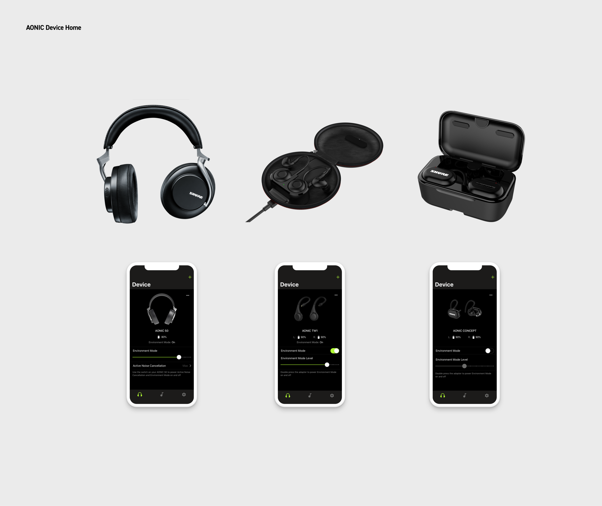
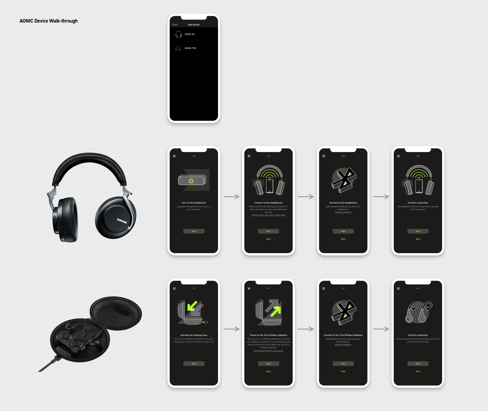
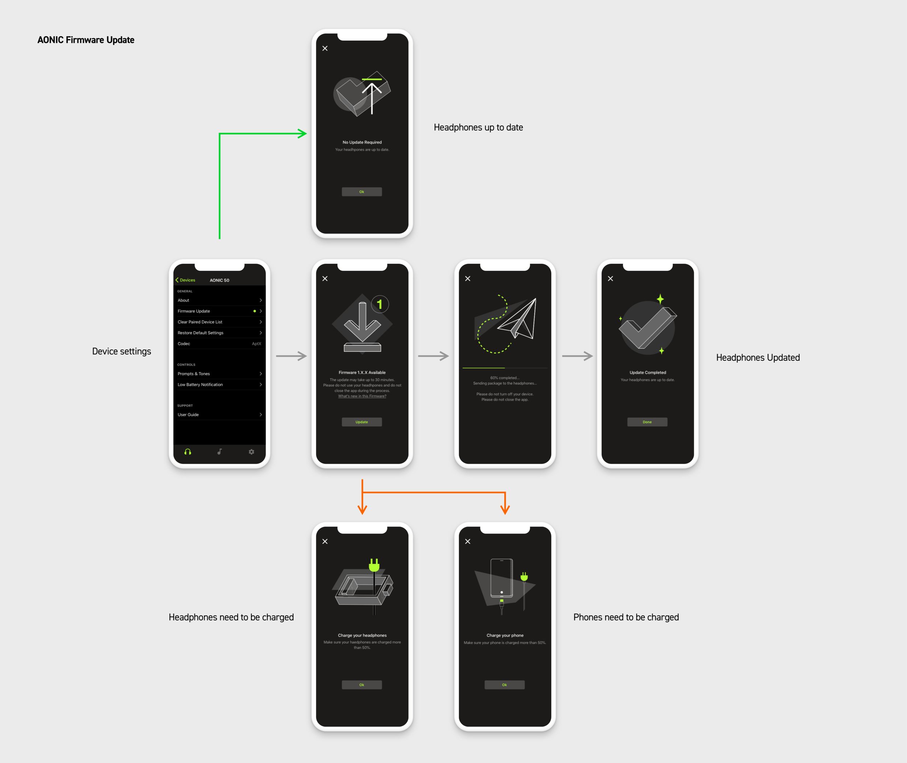

Shure AONIC Headhpones
Overview
Designing how users interact with the new Shure listening headphones and mobile app.

Role
As the lead UX designer in the listening category, I was responsible for the holistic user experience from software applications, and hardware interaction to unboxing experience to make sure we are bringing an intuitive product experience. I led design on how users interact with the headphones, how the buttons work, or where the buttons go and collaborated with the industrial design team and user research team.
Working side by side with different stakeholders, I gained a lot of experience on how UX fits into the hardware and software development cycles since the paces are fundamentally different but dependent on each other. I learned a lot working in SAFe Agile environment as a UX advocate!
Process
Prior to the project planning stage, the team gathered up to go over the high-level road map and the determined different markets we are targeting toward based upon the personas. The UX team then started diverging different ideas on "What do our users want?" and "What can we do better?". Shure has a long history of the listening line, as we start expanding our target to a prosumer basis, we would like to keep our tradition of outstanding sound quality with the incorporation of modern technology.
The team consolidated competitor analysis from numerous competitors on the market and conducted a thorough heuristic evaluation on major brands as we firmly believe intuitive experience comes from the cohesive experience on both software and hardware.
UX team constantly works with user researchers to perform qualitative research on hardware interactions and test out different app design ideas periodically.


Device Home
By doing rounds of user interviews to figure out what are the most important features for headphone users, we decided noise canceling and ambiance settings should be on the top level — with all button customization settings and other options living underneath to reduce cognitive load.

Device Walk-through
Customers don't look at user guides nowadays. The app provides an intuitive step-by-step guide to walk users through how to connect to their headphones.

Firmware Update Process
AONIC headphone users are able to keep their headphones up to date to receive the latest features and robust experience. Below is the flow of how the firmware update works.

Animation Case Study - Headphone equalizer
AONIC headphones let you save your favorite listening settings, so you can enjoy your music just the way you like it. The PLAY app already has software equalizers, but some users found the parametric equalizer a bit tricky. Plus, folks using wireless headphones might not know as much about sound settings as audiophiles do.
I looked into creating fun animations and easy guides to help regular users set up their headphones.
THE BEST NOISE-CANCELING HEADPHONES TO BUY RIGHT NOW